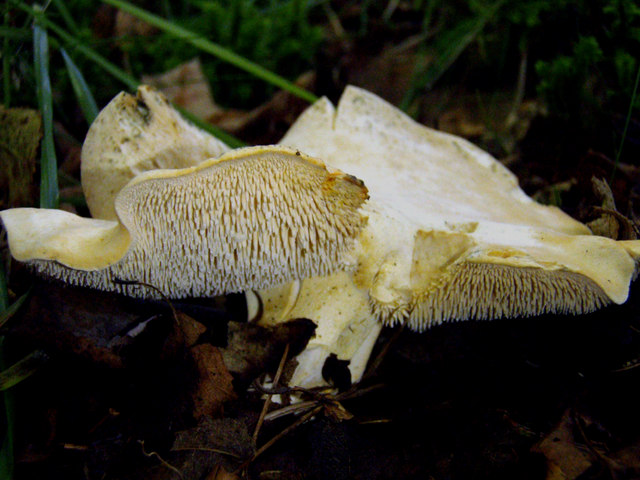

Foraged mushrooms: Hedgehog Fungus

Description
This is a light coloured mushrooms with spines instead of gills. It has a nutty taste and crunchy texture.
- 300g hedgehog fungus
- Tablespoon vegetable oil
- Three cloves garlic, crushed
- Salt and pepper to taste
- Clean mushrooms gently yet thoroughly using a mushroom brush
- Fry chopped mushrooms in vegtable oil
- Add garlic and fry until mushrooms are golden
- Add salt and pepper to taste